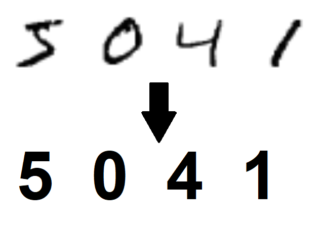

Projet Hackateen 2018
Programme utilisant le dataset MNIST.
Fonctionement
Notre projet était de développer un algorithme grâce auquel on pourrait reconnaitre un chiffre manuscrit et le retranscrire en numérique.

Ce genre d’algorithme, composé d’intelligence artificielle (IA) pourrait être utilisé dans les domaines de la banque ou de la poste afin de reconnaitre la valeur des chèques ou encore de reconnaitre les numéros de rue.
L'intelligence artificielle consiste à mettre en œuvre un certain nombre de techniques visant à permettre aux machines d'imiter une forme d'intelligence réelle (humaine ou animale), elle se définit selon plusieurs thématiques.
Nous avons dans un premier temps pris nos repères avec le language informatique et l’intelligence artificielle.
Nous avons brièvement aborder les termes de matrices: en mathématiques, les matrices sont des tableaux de nombres qui servent à interpréter en termes calculatoires et donc opérationnels les résultats théoriques de l'algèbre linéaire et même de l'algèbre bilinéaire.
Les réseaux sont organisés en couches de neurones interconnectés.
L’opération effectué sur chaque noeux est affine de forme Wx+B avec W qui est le poids, x la variable et B le biais. Le learning rate (lr) est la marge d’erreur c’est à dire que plus le lr est bas plus le résultat est juste.
Une itération du réseau dans le programme est appelé « le nombre d’époque ».
Lors de l’execution de l’entrainement, on utilise que 75% des données pour n’en laisser que 25% pour être sur que l’algorithme a encore la possibilité de généraliser.
Ainsi à chaque époque